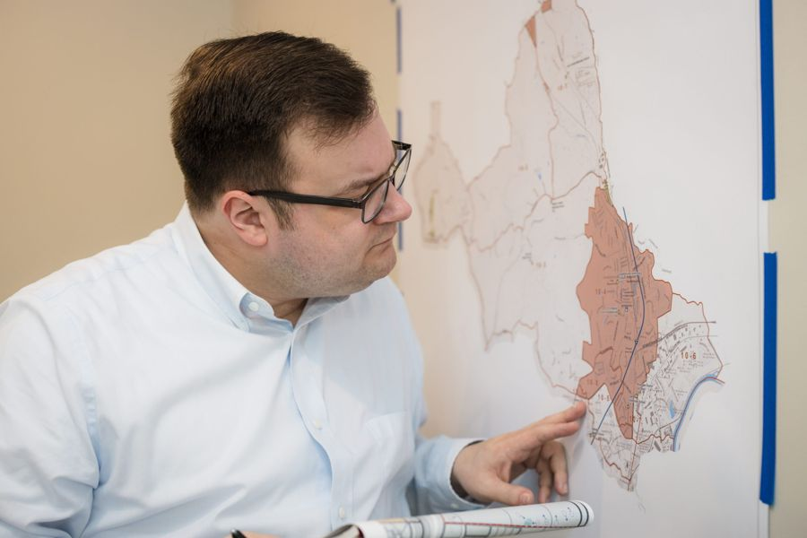
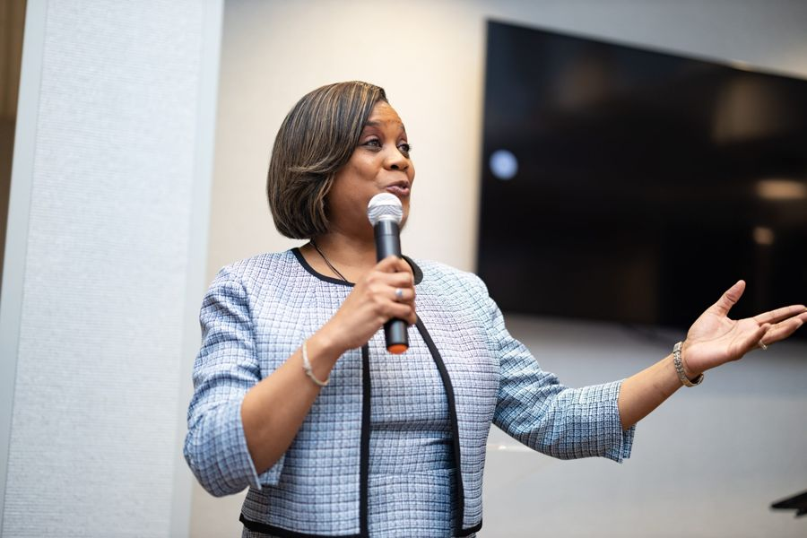
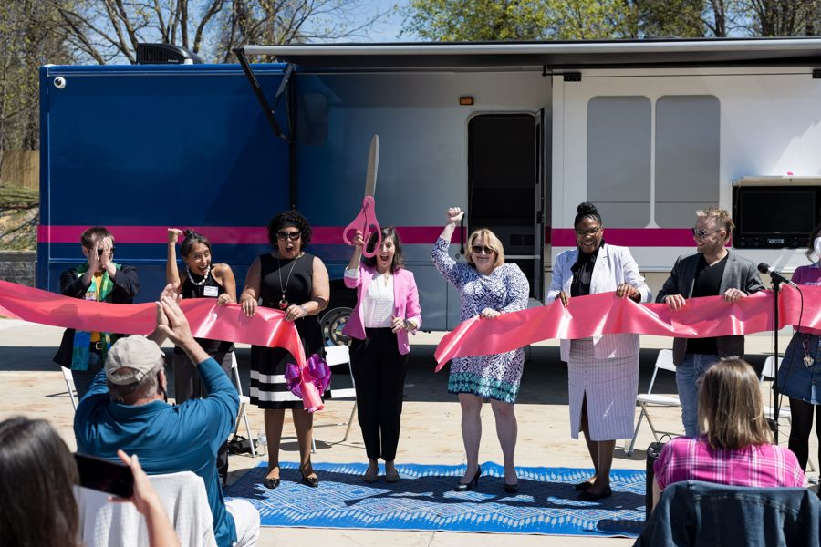
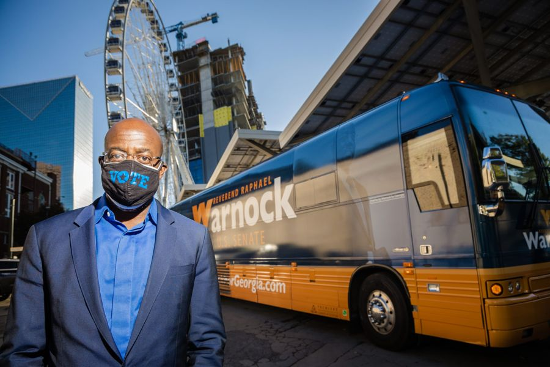
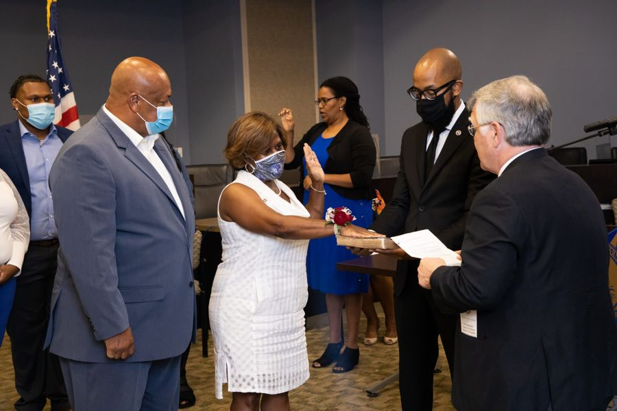
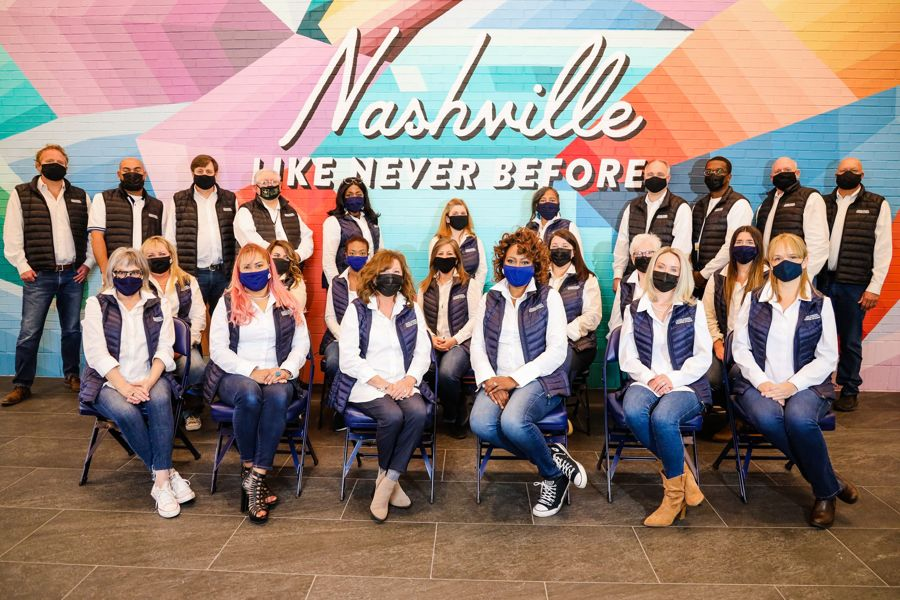
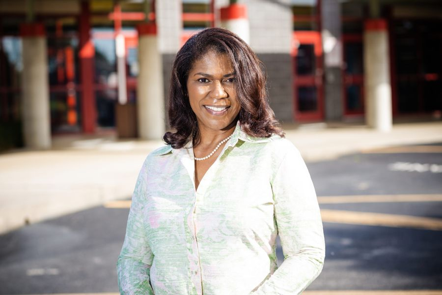

Metro & city
Councilman Zach Young
Zach Young represented District 10 on Metro Council from 2019 to 2023 and in 2024 became Tennessee’s first openly gay school board member. Leo Operations worked with Council Member Young from 2019 through 2023.
Running for office, leading a cause or growing a brand? Start a project with Leo Operations or email Rod@LeoOperations.com.
About Councilman Zach Young
- Before joining Metro Council, Young served seven years as a city commissioner in Goodlettsville. Source
- Young lost his District 10 Metro Council seat in the August 3, 2023 election to Jennifer Frensley Webb, who won 55% of the vote after redistricting. Source
- Young ran unopposed for the District 3 seat on the Metro Nashville Public Schools board in the August 1, 2024 general election; The Advocate reported he would become Tennessee's first out LGBTQ+ school board member. Source
More clients
In goodcompany.

Metro & cityCouncilwoman Jennifer Gamble
Organizations & brandsPlanned Parenthood of Tennessee and North MississippiElected officialsLoudoun County Commonwealth’s Attorney – Buta Biberaj
Organizations & brandsMarch On – USA
Elected officialsProperty Assessor – Vivian Wilhoite
Elected officialsRegister of Deeds – Karen Johnson
Elected officialsSchool Board Member – Sharon GentryElected officialsTN State Rep. – Jesse ChismReady towin?
Tell us what you’re running for, building or launching. We’ll tell you how we make people remember it.
Email Leo Operations →